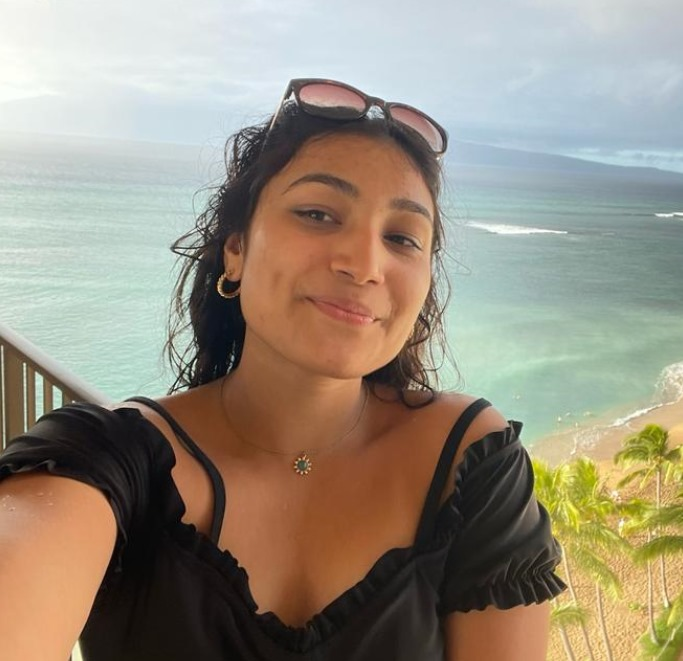
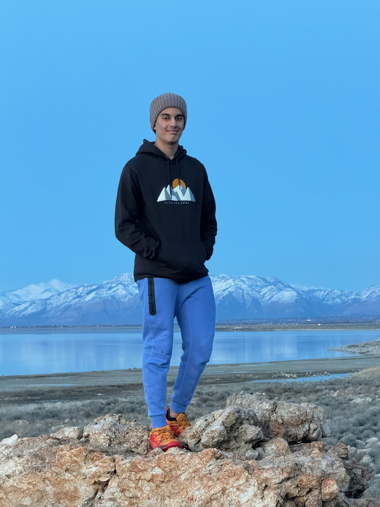
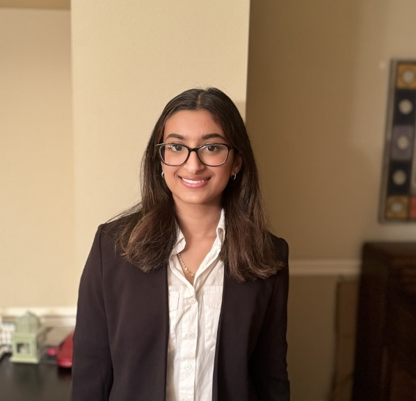
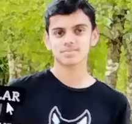
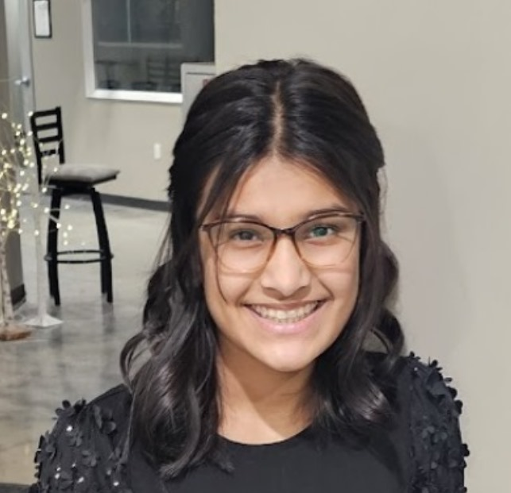

AAROHI GANDHI
Aarohi was the executive director of the website 'CyberMinds' and
managed everything such as interviews, design/layout, forming the ML
team, cybersecurity content, and more. She is incredibly astonished by
the remarkable progress of the website!

TEJASWI ERATTU
Tejaswi is one of Cybermind's Board Directors and Head of Machine
Learning Sector. She is responsible for directing the ML team in
making the Live help.

JOHAAN M.
Johaan helped with machine learning and directed several meetings for
it. He figured out the plan for implementing a chat box, and helped
with the html of the chat box.

VEVAAN VERMA
Vevaan focused on the game development portion of CyberMinds. He
enjoyed learning cybersecurity concepts and finding ways to
incorporate them into various games. He learned many new skills such
as creating a kahoot based game.

VERONICA PAK
Veronica is one of Cybermind's Board Directors and the Head of
Cybersecurity Content. She is primarily responsible for all the
information in the courses. She is extremely passionate about
cybersecurity and is excited about sharing her passion through the
Cyberminds webiste. ¯\_(ツ)_/¯

ADVIK SAGIRAJU
Advik coded the HTML for various course pages on Courses 6 and 10. He
has enjoyed working with CyberMinds and the design aspect of the
webpages.

ANVITHA S.
Anvitha coded the HTML and CSS for the Teams page, and some content
pages for Courses 5 & 9. She loved working with CyberMinds and enjoyed
improving her HTML, CSS, and Javascript skills through this project.
This was her first major coding experience and she is grateful to have
been a part of the CyberMinds team.

JAI SHARMA
Jai created the last page on the home screen, finished nearly all of
the course 4 design and layout, and helped out with a little of course
8.

TUSKER HOWARD
Tusker coded the HTML and CSS for the More Info page, and was one of
the main contributers to implementing a terminal in the website. He
has enjoyed learning HTML, CSS, and Javascript through working on the
CyberMinds project.

ADVAITH V.
Advaith is one of CyberMinds' Board Members and a member of the ML
team he was also responsible for coding html, css, and developing the
unique graphic design elements such as the home page's animation. He
really enjoyed working on this project!

ANYA M.
Anya overviewed the courses and kept the font and colors similar. She
also spent time monitoring the website buttons and activation
features.

PARTH KOTTWAL
Parth K. helped out with the Machine Learning aspects of the website.
He really enjoyed working with Tejaswi to build a chatbox. He also
helped with course 8 & course 9 of the website.

SAVIT PAWAR
Savit helped code the HTML for the home screen. He also coded some
content pages' HTML, CSS, and Javascript. He has enjoyed creating the
CyberMinds website.

AKASH B.
Akash helped out with course 8 and course 6. He lives in Florida, and
found it hard to make it to team meetings, but that didn't stop him
from finishing his work on his side.

NEHA RAO
Neha is the leader for the layout and design of the website. She made
the website usable for devices of all sizes, and she created templates
for the course content pages!

ARIN KOTIYA
Arin worked with Rihit to test the website on multiple devices and
multiple settings. Arin also created documentations on features to be
improved.

RIHIT GANDHI
Rihit worked with Arin to test the website. Rihit also played with the
games and quizzes of the website and gave feedback, and was the first
user tester of the website.

ARYA KUTTIYAN
Arya worked on the HTML and CSS of the website. She really enjoys
coding, and is excited to learn more about cybersecurity through this
project.

ISABELLA Y.
Isabella is a 10th grader attending North Creek High School. She
worked on the HTML of Courses 1, 3, 4, and 8. She also did the CSS for
some of the Course 8 pages. She is new to the concept of
cybersecurity, but has enjoyed learning so much while working on the
website.

ESHAN F.
Eshan helped out with courses 5, 6, and 7. Eshan helped out in machine
learning as well, and was very willing to learn new things, such as
github.

HARSHITH G.
Harshith created nearly all of course 6, and the support screen.
Harshith was also very commited to the website and put in many hours
of work each day!

ETHAN C.
Ethan worked mostly on the backend of the website. For example, he
helped create the code for the terminal and storing user progress.
Although this was very hard, he still pulled through!

JAI SANJ.
Jai works on the Game development for CyberMinds. He uses what he has
learnt about cyber security to make fun and engaging games that help
people learn more about cybersecurity. He helped make the game
for course 3 and 9.

NEIL P.
Neil created the popup when each course is finished to indicate that
the user has finished a course. Neil also added videos and photos to
the courses to make them more engaging.

ANOUSHKA GHARAT
Anoushka is a ninth grader attending Tesla STEM Highschool and has
been pursuing coding for some time, but this is the first time that
she was truly able to apply her knowledge to a bigger project. She
typically assisted with course material.

ANOUSHKA
Anoushka is a 12th grader attending Bellevue High. She enjoyed working
with all the members in CyberMinds, and was really delighted to put
her coding into use. She primarily helped code the Mission, More Info,
and Support screen.

PRIYANSHI
Priyanshi helped out with creating the designs so the website wouldn't
have copyright issues. Priyanshi created over 30 images for the
website using online editing tools.